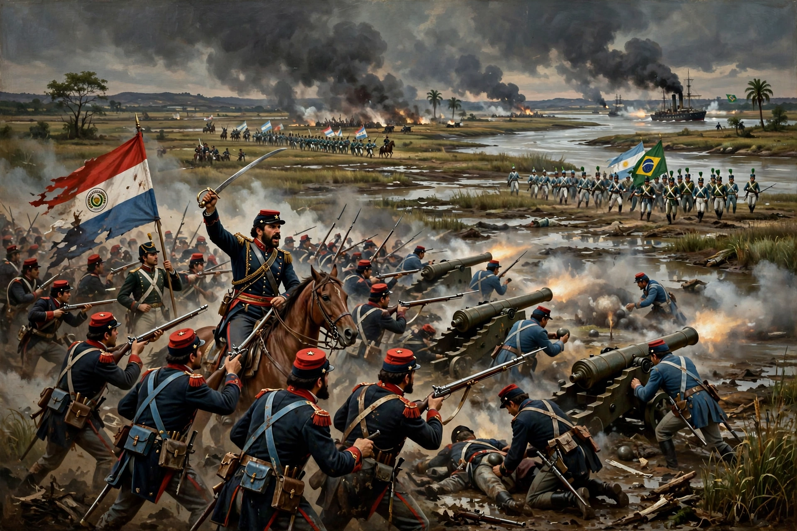

The Paraguayan War, also known as the War of the Triple Alliance, was a South American war fought from 1864 to 1870 between Paraguay and the Triple Alliance of Argentina, the Empire of Brazil and Uruguay. It is the deadliest inter-state war in Latin American history.

Paraguayan president Francisco Solano López intervened in a Uruguayan civil war, then declared war on Brazil (1864) and Argentina (1865). The allies signed the Treaty of the Triple Alliance in May 1865. After initial Paraguayan offensives failed, the war became a grinding campaign around the fortress of Humaitá, followed by the fall of Asunción (1869) and a guerrilla phase in the Cordillera ending with López's death at the Battle of Cerro Corá on 1 March 1870.
Paraguay lost territory to Brazil and Argentina and suffered catastrophic population losses — estimates vary widely, but a large share of its pre-war population, including most adult men, died from combat, disease and famine. The war strengthened Brazil's military and contributed to the abolition of slavery and the fall of its monarchy in 1889.
See also: Francisco Solano López